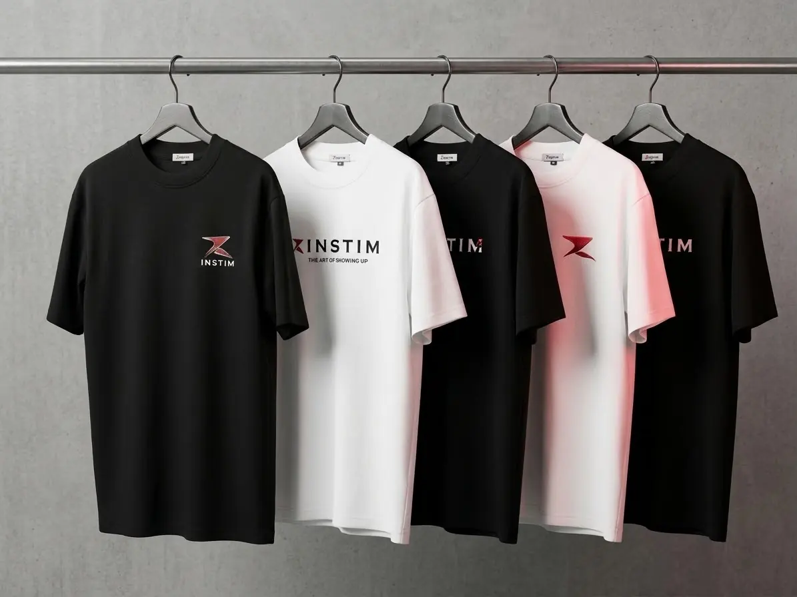

Wear
What you put on is what you are.
Drop 01 is two pieces. Both are cut for training and finished the way we would want them if we were buying them, which is the only standard we have that is worth anything.
Nothing here is seasonal. If a piece sells out we make it again — same fabric, same weight, same cut.

Loading the drop…
Know when it lands.
Drop dates, restocks, and every lab result the day it is published. A few emails a year — no countdowns, no fake scarcity, leave whenever you like.